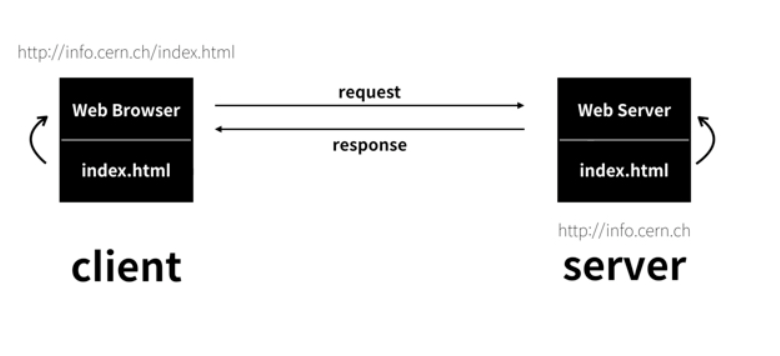

<!doctype html>
<html></html>
<head>
    <title>WEB - 1. HTML</title>
    <meta charset="utf-8">
    </head>
    <body>
        <h1><a href="CODING.html">WEB</a></h1>
        <ol>
            <li>HTML</li>
            <li>CSS</li>
            <li>javascript</li>
            </ol>
            
        

<h2>HTML배우기</h2>
자신에게 필요한 에디터 찾기(2023 best web development editor로 검색해보기)

<br>기획하기 - 구현하기

<br>세상에는 다양한 종류의 코드들이 많다. 그중 HTML은 웹페이지를 만드는 코드이다.

<br>HTML은 쉽다. 그리고 중요하다.

<br><h1>h1:hello world.</h1>
<br><h2>h2:hello world.</h2>
<br><h3>h3:hello world.</h3>
<br><h4>h4:hello world.</h4>
<br><h5>h5:hello world.</h5>
<br><h6>h6:hello world.</h6>

<br>MS워드의 확장자는doc
<br>PDF는pdf
<br>웹브라우저에서 볼 수 있는 웹페이지는 확장자가html이다
<br>html을 웹브라우저에서 열어보기(단축키 윈도우:ctrl+알파벳O 맥:cmd+알파벳O)

<br><h2>태그가 무엇인가</h2>
<br><strong>굵은글자로 강요하기</strong>와 <u>밑줄긋기</u>

<br>굵은글자는 strong, 밑줄긋기는u를 <> 안에 넣으면 된다.(/가 붙으면 닫히는 태그) 태그는 중첩해서도 사용 가능하다. <strong>굵은글자로 강요하면서<u>밑줄을 같이 긋거나</u></strong>아니면<u>밑줄을 그으면서 <strong>굵은 글자로 강조</strong></u>하는 것이 가능하다는 것이다.

<br>>한글이 깨지면 어떻게 해야 할까? < meta charset="utf-8" >를 추가해보자. 우리가 파일을 저장하면 UTF-8로 저장이 된다. 그럼 웹브라우저에게 UTF-8로 페이지를 열라고 해줘야 한다. 그걸 브라우저에게 알려주는 코드가 < meta charset="utf-8" > 인 것이다.

<br><h2>통계에 기반한 학습</h2>
<p>구글에서 수많은 웹페이지를 분석한 결과를 보기좋게 잘 정리한 사이트(https://advancedwebranking.com/html/)

<br>통계를 보면 어떻게 공부해야할지 눈에 보이기 시작한다. 스스로 파악할 수 있다. 

<br>무언가를 배우고 싶을때 빈도를 찾아보고 배우고 싶은 것에 대한 높은 빈도를 보이는 단어, 기술들에 대해 먼저 배워보자. 
</p>
<br><h2>줄바꿈</h2>
<p>혼자서 검색해보기(html new line tag로 검색해보기)
<br>HTML에서 새로운 줄을 표현할때는 < br > 태그를 쓰면 된다.
< br >태그는 특이한 면이 있다. 바로 다른 태그들과 달리 닫히는 태그가 쌍으로 존재하지 않는다. 
HTML의 여러 태그중 무엇인가를 설명하지 않는 태그들은 감싸야하는 컨텐츠가 없기 때문에 태그를 닫지 않는다는 규칙이 있다. 
br이 그사례중 하나이다.(img, input,hr,meta등도 있다.)
<br>줄바꿈을 하는 이유는 단락을 표현하기 위해서 이다.
<br>HTML을 만든 사람들은 단락을 표현한 때 쓸 수 있는 태그를 마련해 두었다. 
<br>단락(baragraph)을 표현하는 태그를 검색해보자.(html paragraph tag검색)
<br>p라는 태그가 나온다. p태그는 br과 다르게 하나의 단락을 그룹핑 할 수 있도록 열고 닫는 태그가 존재한다.
<br>br과 결과는 같아 보이지만 줄바꿈 보다 단락을 표현할 땐 p가 더 좋은 선택이다. 단락에 단락태그를 사용하는 것이 웹페이지를 정보로서 보다 가치있게 해주기 때문이다. 
<br>br태그는 줄바꿈을 의미할 뿐인 것이다. 
</p>
<p>p태그는 단점이 있다. 단락과 단락의 간격이 고정되어 있기 때문에 시각적으로 자유도가 떨어진다. 반면에br태그는 쓰는만큼 줄바꿈이 되기 때문에 원하는 만큼 간격을 줄 수 있는 장점이 있다. 그래서 많은 사람들이 br태그를 선호한다.</p>
<p>웹에는 CSS라는 기술 있다. 이 기술을 이용하면 p태그의 한계를 극복할 수 있다.</p>
<br>css는HTML과 완전히 다른 문법을 가진 언어이다. HTML이 정보를 표현하는 것이라면 CSS는 정보를 꾸며주는 것이다. 
<br><h2>CSS를 이용해서 단락 조절해보기</h2>
<p style="margin-top:45px;">p태그에 style="margin-top:45px;"를 추가하면 p태그 위쪽으로 45px만큼의 여백(margin)이 생기게 된다.
<br>(지금 위에 적용되어 있다.)</p>
<br>이것이 CSS이다. 중요한 것은 br보다p태그가 좋은 이유를 이해하는 것이다.
<p>p태그를 통해 단락의 경계를 분명히 하면서 CSS를 통해 p태그의 디자인을 자유롭게 변경할 수 있기 때문에 br보다 p태그가 더 좋은 선택이 될 수 있다.</p>
<h2>HTML이 중요한 이유</h2>
<p>오늘날 정보의 세계에서 검색엔진의 검색결과에서 노츨된다는 것은 실제로 존재하느냐 존재하지 않느냐의 문제라고 할 수 있다. 그렇기 때문에 의미에 맞는 태그를 사용한다는 것은 매우 중요한 것이다.</p>
<br>HTML이 중요한 또하나의 이유
<p>웹의 핵심적인 철학은 접근성이다. 웹은 모든 운영페제에서 동작하고 소스코드는 누구나 볼 수 있고 저작권이 없는 순수한 공공재 이다. 이런특징들이 웹을 다른 기술들과 구별되는 특별한 것으로 만드는 것이다.
웹이 중요하게 생각하는 접근성은 신체적 장애가 있는 사람도 정보에 쉽게 접근할 수 있어야 한다는 것이다. 예를 들어 시각장애가 있는 사람은
스크린리더(screen reader)와 같은 프로그램을 이용해서 정보를 청각화 해서 접하게 된다. 
그런데 윂페이지를 이쁘게 만들기 위해 HTML을 사용하지 않고 웹페이지 전체를 이미지로 만든다면 시각장애가 있는 사람들에게는 암흑과도 같은 상태가 될 것이다. 즉, 나도모르게 누군가를 소외시키게 되는 것이다. 
그러나HTML을 잘 사용한다면 반대로 자신도 모르는 사이에 누군가에게 정말 큰 도움을 주고 있는 것일 수 있다. 
그렇기에 HTML은 비즈니스적인 측면에서도 중요하지만 휴머니즘 적인 측면에서도 중요한 기술이다.</p>
<h2>최후의 문법속성과 img</h2>
<br>태그의 심화된 문법인 속성(attribute)을 배워보자. 이것까지 배우는 것이 HTML의 기본문법을 완전히 마스터 하는 것이다. 
<p>img는 이미지를 넣는 태그이다.(image의 줄임말)
img태그만 넣는다고 이미지가 생기지 않는다. 어떤 이미지를 불러올지에 대한 정보가 부족하기 때문이다. 그렇기에 새로운 문법이 도입되게 되는데 그것이 바로 속성(attribute)이다.
img태그에 소스(source)의 줄임말인src를 붙여서 코드를 만들어보자(예시:img src="https://s3-ap-northeast-2.amazonaws.com/opentutorials-user-file/module/3135/7648.png")
src가 바로 속성이다. 속성의 값인 주소는 이미지의 주소이다. 즉, src라는 속성을 통해 이미지를 불러오게 된 것이다. 위에 이미지는 인터넷에 있는 이미지이다. 내컴퓨터에 이미지가 없어도 표시가 가능한 것이다. 
</p>
<p>그럼 내 컴퓨터에 있는 이미지를 표시하고 싶을땐 어떻게 해야할까?
<br>먼저 이미지 파일을 구해야 한다. 이미지를 구하고 저장한뒤(이미지를 구할때 저작권에 구속받지 않고 자유롭게 사용할 수 있는 서비스를 찾아보자.)
저장한 이미지를 프로젝트 폴더에 위치시킨다.
<br><br style="margin-top: 45px;">
<br><br style="margin-top: 45px;">이미지와 같이 웹페이지 파일과 같은 위치에 있는 이미지 파일 이라면 이미지 파일의 이름만 적어주면 된다.
<br>img src="coding,jpg"
</p>
<p>이미지의 크기가 원하는 것과 다를때는 (html img size attribute)이렇게 검색해보자.
<br>width라는 속성이 찾아지게 될 것이다. width의 값으로 숫자나 %를 사용해서 이미지의 크기를 조정할 수 있다.
<br><br style="margin-top: 45px;">
<br><br style="margin-top: 45px;">위의 이미지는 img src="7663.png" width="70%"
<br><br style="margin-top: 45px;">
<br><br style="margin-top: 45px;">위의 이미지는img src="7663.png" width="40%" 로 세팅한 것이다.
</p>
<p>태그의 이름만으로는 정보가 부족할 때가 있다.
<br>그럴때 속성이라는 문법을 추가함으로써 태그가 보다 풍부한 표현력을 가질 수 있게 만들어 줄 수 있다.
<br>이제 우리는 태그의 문법을 완벽히 마스터 했고 HTML에서 매우 인기 높은 태그인 img도 알게 되었다.
</p>
<h2>부모자식과 목록</h2>
<p>태그간의 관계를 나타내는 부모(parent)와 자식(child)에 대해서 알아보자.</p>
<p>< parent >
<br>< child >< /child >
<br>< /parent >
<br>위의 코드에서(실제로 저런태그는 없다.)
<br>parent태그에 대해서 child태그를 자식 태그라고 하며 또 child태그에 대해서 parent태그를 부모태그라고 한다.
<br>< p > 
<br>< a href="https://opentutorials.org">opentutorials < /a >
<br>< /p > 
<br>위의 태그를 보면 p 태그가 a태그의 부모, a태그가 p태그의 자식이 된다.
<br>그러나 꼭 a태그가 p태그의 자식이어야 하는 것은 아니며 반대경우도 마찬가지이다.
<br>직장의 상하관계와 같이 필요에 따라서 관계가 달라질 수 있는 것이다. 
<br>그러나 몇몇 태그들은 부모자식관계처럼 고정된 관계인 태그들이 있다.
</p>
<p><br><br style="margin-top: 45px;">목차에 대해서 다뤄 볼 것이다.
<br>1.HTML<br>
2.CSS <br>
2.javascript <br>
목차비슷하게 나오지만 위의 글은br로 만든 것이다. 
<br>목차를 표현할때 쓰라고 마련되어있는 태그가 있다. 그걸 써야한다. 그래야 웹페이지가 더 가치있게 된다. 
<br>목차는 영어로list이다. 앞에 두글자인li가 목차 태그가 된다.
<li>1.HTML</li>
<li>2.CSS</li>
<li>3.javascript</li>
<br>위의 글은 li태그를 사용해서 만든 것이다.
<br>목록과 목록을 서로 구분할 필요가 있는데 이때 사용하는 태그가ul태그이다. 
<li>1.HTML</li>
<li>2.CSS</li>
<li>3.javascript</li>
<li>홍길동</li>
<li>호랑이</li>
<li>피카츄</li>
<br>위의 글은 목차와 참가자 목록을 작성한 것이다. 그러나ul태그를 사용하지 않아 경계가없어서 구분이 되지 않는다.
<ul><li>1.HTML</li>
<li>2.CSS</li>
<li>3.javascript</li>
</ul>
<ul><li>홍길동</li>
<li>호랑이</li>
<li>피카츄</li>
</ul>
<br>위의 글은 ul태그를 이용해 구분할 수 있는 경계를 만들어 준 것이다.
<br>보는 것 처럼 li태그는 ul태그를 반드시 필요로 한다. ul태그 역시 li태그가 없다면 존재 가치가 없다.
<br><br style="margin-top: 45px;"> 공부를 할 때는 항상 극단적으로 생각해야 한다. 극단적이지 않은 경우에는 코딩을 할 필요가 없기 때문이다.
<br>예를 들어 위의 목차가 3개가 적혀 있지만 만약1억개라면? 힘들게 1억개를 다 작성했는데 맨위 1번을 지워달라고 한다면 나머지 목차의 번호들도 전부 다시 수정해야 한다.
<br>이런 절망스렁 상황에서 우릴 구원해 주는 것이 바로 코딩이다. 
<br>ul태그는 <u>u</u>nordered <strong>l</strong>ist의 약자이고
<br>ol태그는 <u>o</u>rdered <strong>l</strong>ist의 약자이다.
<ol><li>1.HTML</li>
    <li>2.CSS</li>
    <li>3.javascript</li>
    </ol>
    <ul><li>홍길동</li>
    <li>호랑이</li>
    <li>피카츄</li>
    </ul>
<br>이렇게 목차를 추가해 보았다. ol태그를 쓰면 목차에 자동적으로 번호가 매겨진다.
</p>
<h2>문서의 구조와 슈퍼스타들</h2>
<br>HTML의 문법을 마스터했다는 것은 문장을 만드는 방법을 마스터 했다는 것이다.
<p>문장이 모이면 페이지가 되고 페이지가 모이면 책이 된다.
<br>책에는 표지가 있고 표지에는 제목과 저자가 표기된다. 이처럼 정보가 많아짐에 따라서
<br>정보를 잘 정리정돈하기 위한 체계 즉, 구조라는 것이 필요하다.
<br>그 구조를 만드는 방법을 살펴보자. 
</p>
<p>지금까지 만든 웹페이지가 표시되는 웹브라우저의 탭을보면 다른 웹페이지들과 달리
<br>제목이 내용을 잘 표현하지 못하고 있다. 그냥 파일명이 제목이 되어있다. 
<br>(html title)이라고 검색해보자. 제목을 지정하기 위해서는 타이틀(title) 이라는 태그를 사용하게 된다. 
<br>그럼 웹페이지의 제목이 내용을 잘 반영하게 될 것이다. 
<br>특히 title태그는 검색엔진이 웹페이지를 분석할때 가장 중요하게 생각하는 태그이기 때문에 title태그를 쓰지 않으면 정말 큰 손해가 될 것이다. 
<title>WEB - 1. HTML</title>
<br>< title > < /title >태그를 사용해보자. 
</p>
<p>영어가 아닌 문자로 웹페이지를 만들면 아래 이미지와 같이 문자가 깨지는 경우가 생기게 된다. 
<br><br style="margin-top: 45px;">
<br><br style="margin-top: 45px;">에디터의 하단을보면 아래와 같이 UTF-8이라고 적혀있는 것이 보일것이다. 
<br><br style="margin-top: 45px;">
<br><br style="margin-top: 45px;">이것은 이 웹페이지가 UTF-8방식으로 저장되어있다는 뜻이다.(안보이거나 무엇인지 몰라도 상관없다.)
<br>하지만 이웹페이지가 UTF-8로 저장되었다면 열때도 UTF-8방식으로 해석해서 열어야 된다는 것은 이해하고 있어야 한다. 
<br>영어가 아닌 문자가 깨지는 이유는 웹페이지가 저장된 문자표현 방식과 웹브라우저가 웹페이지를 해석하는 방식이 일치하지 않을때 
<br>웹브라우저는 저렇게 이상한 문자를 표시하게 된다.
<br>이 문제를 해결하기 위해서 웹브라우저가 UTF-8로 열어야 된다는 것을 알아듣게 해줘야 한다. 
<br>< meta > 태그를 통해 그렇게 만들 수 있다.(예시:< meta  charset="utf-8">)
<br>title, meta태그를 사용한 코드는 다른 코드와 구분된다.
<br>바로 본문이 아닌 본문을 설명한다는 점이다. 
<br>HTML을 만든 사람들은 본문과 본문을 설명하는 정보를 각기 다른 태그로 분리해서 정리정돈하기로 했다. 그렇기에 우리는 거기에 따라야 한다. 
<br>본문은 body태그로 본문을 설명하는 태그는 head태그를 사용한다. 
<br>< head >
<br>< title >WEB - 1. HTML< /title >
<br>< meta charset="utf-8" >
<br>< /head >
<br>< body >
<br> < ol >< li >1.HTML< /li >
<br>    < li >2.CSS< /li >
<br>    < li >3.javascript< /li >
<br>    < /ol >
<br>    < ul >< li >홍길동< /li >
<br>    < li >호랑이< /li >
<br>    < li >피카츄< /li >
<br>    < /ul >
<br>< /body >
 
<br>여기에 더해서 body태그와 head태그를 감싸는 하나의 태그를 두기로 약속하였다. 
<br>바로 html태그이다. 
<br>그리고 이 웹페이지가 HTML로 만들어졌다는 것을 표현하기 위해서 문서의 시작에
<br>< !doctype html > 이라는 코드를 추가해야 한다. 
<br>이렇게 해서 웹페이지의 구조를 완성하는 것이다.
</p>
<br> 웹페이지의 구조는
<br> !doctype html-웹페이지가 HTML로 만들어졌다는 것을 표현. 
<br>html-body태그와head태그를 감싼다.
<br>head-본문을 설명하는 코드를 감싼다.
<br>    title(웹브라우저에 표시될 제목)/title
<br>    meta charset="utr-8"-웹페이지가 저장된 방식이다.
<br>예시로 utr-8이 들어가있지만 바뀔 수 있으며 웹페이지를열때 웹브라우저가 코드에 맞게 열어야 되는 것을 알수 있게 해주는 것이다.
<br>웹페이지에 저장된 문자표현 방식과 웹브라우저가 웹페이지를 해석하는 방식이 다르면 이상한 문자를 표시하게 되기 때문이다. 
<br>/head
<br>body-본문을 감싸는 태그이다. 
<br>    ol-목차를 나눌때 사용한다. ul도 사용하지만 ol이 목차의 숫자를 매기기에 편리하다.
<br>      li-목차제목작성시 필요한 태그 
<br>    /ol 
<br>목차에 이어서 본문 내용들을 작성한뒤
<br>/body태그로 닫는다./body태그로 감싼뒤
<br>/html태그로 한번 더 감싼다. 
<br><strong>여기까지가 웹페이지의 구조이다.</strong>
<h2>HTML 태그의 제왕</h2>
<p>태그가 웹의 왕국이라면 지금 배울 태그는 이 왕국의 제왕이라고 볼 수 있다.
<br>현대의 HTML은 150여개의 태그로 이루어져 있지만 이 전부는 모두 하나의 태그 아래에 있다.
<br>검색엔진들은 이 태그 덕분에 전세계의 웹을 항해하면서 웹페이지들을 발견할 수 있고
<br>이 태그 덕분에 더 좋은 검색결과를 만들 수 있게 되었다.
<br>이 태그가 없다면 검색엔진은 존재하지 않았을 것이다. 
<br>이 태그가 없으면 전세계의 모든 웹페이지는 고립될 것이고 정보혁명도 시작되지 않았을 것이다.
<br>HTML의 약자 HyperText Markup Language의 HyperText가 바로 이 태그를 의미한다. 
<br>이 태그는 앵커(anchor)의 첫글자 a 이다. 앵커는 배가 정박할 때 사용하는 닻을 의미한다.
<br>정보의 바다에 정박한다는 의미의 시적인 표현인 것이다. 
<br>a태그는 어떤 기능을 표현하는 것일까? 이 태그는 링크이다. 
<br>HTML의 공식사용설명서 페이지를 링크로 걸어보자. 
<br>주소는 https://www.w3.org/TR/html5/ 이다.
<br>직접 링크를 거는 방법을 찾아보는 것도 중요하다.(html link 로 검색해보자.)
<br>< a href="https://www.w3.org/TR/html5/"
<br>target="_blank" title=""html5 specification" >HyperText Markup Language (HTML)< /a >
<br>위에서 a는 anchor의 약자이고
<br>href는 <strong>H</strong>yper TExt <strong>Ref</strong>erence의 약자이다. 
<br>target="_blank"는 링크를 클릭했을 때 새창에서 페이지가 열리게 하는 속성이다.
<br>title은 이 링크가 어떤 내용을 담고 있는지를 툴팁으로 보여주는 기능이다.
<br>링크는 웹을 웹답게 하는 가장 중요한 기능이다.
</p>
<h2>웹사이트 완성</h2>
<p>지금까지 웹페이지를 만드는 방법, 페이지와 페이지를 링크라는 길로 연결하는 방법을 배웠다. 
<br>링크를 본드나 실로 비유한다면 페이지가 모여 책이 되듯이 웹페이지를 링크로 모아 일종의 책이 만들어 질 수 있다. 
<br>링크를 통해 서로 결합되어 있는 웹페이지들의 그룹을 우리는 웹사이트(web site)라고 한다. 
</p>
<p>지금부터 웹사이트를 만들어보자.
<br>웹사이트를 만들 때는 순서가 중요하다. 어떤 순서로 작업을 진행할지 잘 생각해보자.
<br>먼저 웹페이지 전체를 대표하는 큰 제목을 만들어보자.
<br>h1 >WEB< /h1 > - 제목은 h1~h6까지 있으며 숫자가 낮을 수록 더 큰 제목이 된다.
<br>그리고 목차를 작성해보자. 
<br>< ol > - 목차(ol, ul태그가 있다. ol코드는 순서를 매기기에 유용하다.)
<br>< li >HTML< /li > - 목차리스트(li태그를 사용한다.)
<br>< li >CSS< /li >
<br>< li >Java Script< /li >
<br>< /ol >
<br>그다음 링크를 만들어 보자. 
<br>< h1 >제목 앞에 a태그를 붙인다. 그 다음 href="(이곳에 링크주소)"를 작성한 뒤 제목 뒤에 a태그를 닫는다.
<br>링크 주소 뒤에 target="_blank"를 붙인다면 현재 창이 아닌 새창으로 열 수 있게 된다.
<br>< h1 >< a href="coding.html"WEB< /a >< /h1 >
<br>< ol > - 
<br>< li >< a href="1.html"target="_blank">HTML< /a >< /li > 
<br>< li >< a harf="(링크주소)">CSS< /a >< /li >
<br>< li >< a harf="(링크주소)">Java Script< /a >< /li >
<br>< /ol >
<br>열린a태그 제목 전에 >로 닫기 까먹지 말것!
<br>이렇게 링크를 연결 함으로써 여러 웹페이지들을 웹사이트로 만들 수 있다.
</p> 
<p>우리는 지금까지 넘어야할 2개의 산 중 1개의 산을 넘었다. 
<br>바로 웹페이지를 만드는 것이다. 우린 이산을 멋지게 넘었다. 
<br>또 하나의 산은 내가 만든 웹페이지를 인터넷을 통해서 누구나 가져갈 있게 하는 것이다.
<br>인터넷과 웹은 같을까 다를까?
<br>비유적으로 표현하자면 인터넷은 도시이고 웹은 도시위에 있는 건물 하나이다. 
<br>인터넷이 도로라면 웹은 도로위를 달리는 자동차 한 대 이다. 
<br>즉, 인터넷이 운영체제라면 웹은 운영체제 위에서 동작하는 하나의 앱이라고 할 수 있다. 
<br><br style="margin-top: 45px;">
<br><br style="margin-top: 45px;">웹은 인터넷의 부분집합이며 웹과 동급인 기술은 별처럼 많이 있다.
<br>우리도 웹과 동급인 기술을 개발할 수 있다.(성공가능여부는 별개의 문제...)
<br>우리가 웹과 인터넷, 이 두 기술을 잘 구분하지 못하는 이유는
<br>웹이 너무나 성공했기 때문이며 또 웹 때문에 사람들이 인터넷을 쓰기 시작했기 때문이다. 
<br>그만큼 웹은 중요한 기술이다. (인터넷은 1960년, 웹은1990년에 탄생되었다.)
<br>웹이 만들어 지면서 인터넷이 대중화 되게 되었다.
<br>이제 우리는 우리가 만든 웹페이지를 인터넷을 통해 전세계의 누구나 볼 수 있도록 해야한다.
<br>이것까지 해낸다면 우리는 웹마스터가 된다. 웹마스터가 되어보자!
</p>
<h2>인터넷을 여는 열쇠 : 서버와 클라이언트</h2>
<p>
<br>인터넷이 동작하는 기본적인 원리를 알아보자. 
<br>인터넷이 동작하기 위해서는 최소 2대의 컴퓨터가 필요하다. 1대는 인터넷이 아니고 3대는 본질적이지 않기 때문이다. 
<br style="margin-top: 45px;">
<br><br style="margin-top: 45px;">인터넷을 이용해서 웹을 만들기로 한다고 했을때 이를 위해 인터넷으로 연결된 2대의 컴퓨터를 장만한다.
<br>그리고 2개의 프로그램을 개발한다. 각각의 프로그램에 웹브라우저와 웹서버라는 이름을 붙인다. 
<br>웹서버가 설치된 컴퓨터에는info.cern.ch라는 주소를 부여하고 이컴퓨터의 어떤 디렉토리에 index.html이라는 파일을 저장한다. 
<br>그리고 이번엔 웹브라우저가 설치된 컴퓨터의 주소창에 http://info.cern.ch/index.html이라는 주소를 입력하고 엔터를 친다. 
<br>그럼 어떤일이 일어나게 될까?
<br style="margin-top: 45px;">
<br style="margin-top: 45px;">
<br><br style="margin-top: 45px;">
<br>웹브라우저가 설치된 컴퓨터는 인터넷을 통해서 전기적인 신호를 info,cern,ch라는 주소의 컴퓨터에 보낸다. 
<br>그 전기적 신호는'나는 index.html이라는 파일의 코드를 원한다' 라는 메시지가 들어가있다. 
<br>그럼 info.cern.ch에 설치된 웹서버라는 프로그램이 디렉토리에서 index.html이라는 파일을 찾아서 그 내용을 전기적 신호로 바꾸어서
<br>웹브라우저가 설치된 컴퓨터에 다시 신호를 보낸다. 
<br>그럼 웹브라우저가 설치된 컴퓨터에는 index.html파일의 내용(코드)가 도착하게되고 웹브라우저는 그 코드를 읽어서 웹페이지를 화면에 출력하게 되는 것이다.
</p>
<p>
    <br>이 관계를 보면 웹브라우저가 설치된 컴퓨터와 웹서버가 설치된 컴퓨터가 서로 정보를 주고 받는다. 
    <br>이 중 웹브라우저가 깔린 컴퓨터는 정보를 요청하고 웹서버가 깔린 컴퓨터는 정보를 응답한다. 
    <br>이 관계를 고객과 사업자에 비유하여 각각 클라이언트(clint)와 서버(server)라고 한다. 
    <br>요청하는 컴퓨터는 웹브라우저 컴퓨터 이다. 다른말로 클라이언트 컴퓨터라고 하며
    <br>응답하는 컴퓨터는 웹서버 컴퓨터 이다. 서버 컴퓨터, 혹은 그냥 웹서버 라고 부르기도 한다.
    <br style="margin-top: 45px;"> 
    <br><br style="margin-top: 45px;">
    만약 게임을 만든다면 내가 만든 게임회사의 컴퓨터는 서버 컴퓨터가 되고 설치된 프로그램을 게임서버라고 하며
    <br>누군가 내가만든 게임을 본인 컴퓨터에 설치하려 한다면 설치된 프로그램을 게임 클라이언트라고 하게 된다. 
</p>
<p>
    서버와 클라이언트는 인터넷을 이용하는 모든 정보시스템에 적용되는 문법과도 같다.
    이것을 이해하고 경험이 쌓일수록 인터넷에 대한 이해가 높아질 것이다. 
    지금까지 HTML이라는 컴퓨터 언어의 사용법을 배웠다. 다시말해 웹브라우저를 제어하는 방법을 배운 것이다. 
    이해는 익숙해지기 위한 방법중 하나이다. 꾸준히 지속하자. 그럼 익숙해지게 될 것이다. 
</p>
<p>
    이제 웹서버를 배울 것이다. 웹서버에 익숙해지면 내가만든 컨텐츠를 인터넷을 사용할 수 있는 전세계의 누구나 사용할 수 있도록 할 수 있다. 
    웹서버에는 2개의 갈림길이 있다. 
    하나는 직접 웹서버를 설치하는 것이다. 이것은 어려울 것이다. 그러나 그 과정에서 많은 것을 배울 수 있게 된다. 
    또 하나의 갈림길은 웹서버를 제공해주는 업체를 이용하는 것이다. 이런 업체들을 웹호스팅 업체라고 한다. 
    이것은 쉽다. 그러나 많은 것들이 감춰져 있다. 
    웹호스팅으로 쉽게 목표를 달성해보고 웹서버를 직접 설치하는 방법으로 공부하는 것을 추천한다. 
    만약 웹서버가 어렵거나 시간이 없다면 웹호스팅만 공부해보자.
</p>
<h2>
    웹호스팅 실습해보기
</h2>
<p>
    <br>웹서버를 직접 운영하기 위해선 우선 컴퓨터가 있어야 하고 컴퓨터가 냉장고처럼 항상 켜져 있어야 한다. 
    <br>그리고 웹서버라는 프로그랩을 배워서 설치하고 인터넷을 통해서 외부로 정보를 전송할 수 있또록 설정해야 한다. 
    <br>쉽지 않은 과정일 것이다. 
    <br style="margin-top: 45%;"> 
    <br style="margin-top: 45%;">
    그래서 이런일을 대행해주는 회사들이 있다. 
    인터넷에 연결된 컴퓨터 하나 하나를 호스트라고 한다. 이런 컴퓨터를 빌려주는 사업을 호스팅이라고 말한다. 
    웹서버를 전문적으로 빌려주는 비즈니스를 웹호스팅 업체라고 말하는 것이다. 
    수많은 웹 호스팅 업체가 있는데 무료, 유명한 서비스를 찾아보자. 
    

</p>


</body>
</html>